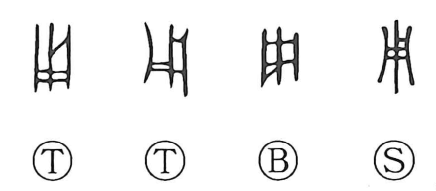

Explanation
用 pictures an enclosure made by joining wooden members. Sacrificial victims were kept within such a fence, and to ‘use’ one meant to employ it in an offering. Early ritual usage provides the concrete basis of the familiar verb.
The Spring and Autumn Annals uses 用 of a captive ruler in a sacrificial context, where blood was taken for the rite. Divination instructions to ‘use’ something may also originally concern the choice of an offering. The word then broadens to carrying out a decision or putting something into action.
From this come using or employing, an instrument's function, and the resources or preparations required for an undertaking. 用 can also work like 以, meaning ‘with’ or ‘by means of.’ 甬 and 庸 share related uses, although their added graphic elements have their own histories.